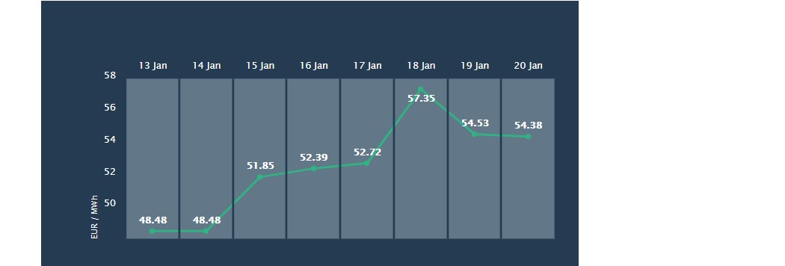
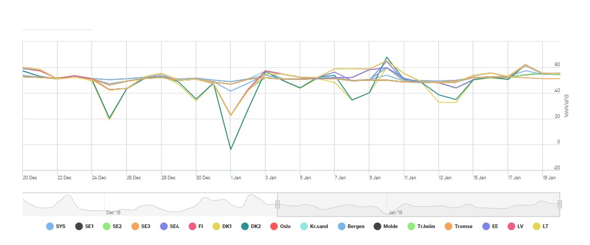

Power prices in January
Following the high prices we have seen in December and November there is little reason to believe that the prices will go down.
High prices in the Nordics
So far in January the prices seem to stay in the area around 50 EUR/MWh as predicted, however there seems to be a steady rise in the prices following dry and cold weather.
Winter incoming
In the middle of January the prices went steadily upwards with a peak on January the 18th. The weather was the main reason for that. The cold weather changes consumer habits which affects the price due to demand.
The month of January started with a drop in the power price. In Denmark there was a negative daily average price of -3.93 EUR/MWh whereas in Norway the daily average was 48.74 EUR/MWh. The system price for the market was right above 41 EUR/MWh. Ten days later the system price was around 54 EUR/MWh with a daily average almost reaching 70 EUR/MWh in certain spot areas like DK2.
There is no secret that the power prices in Denmark are the most fluctuating with their depedancy of the wind due to their wind power. This results in an uncertainty that often comes with renewable sources of energy.
Sources and credits
Source for this article is data from Nordpool